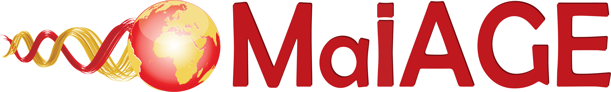
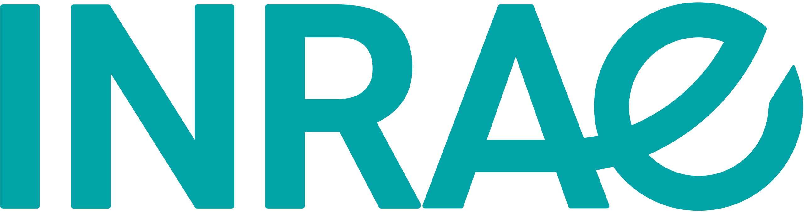
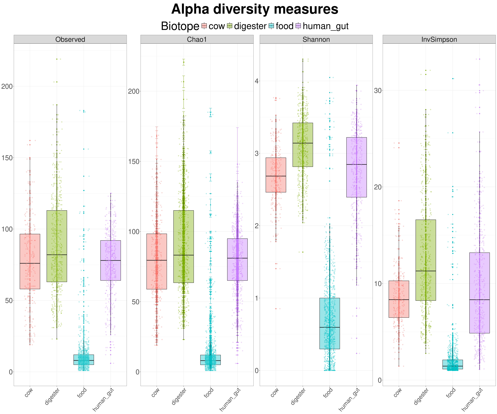
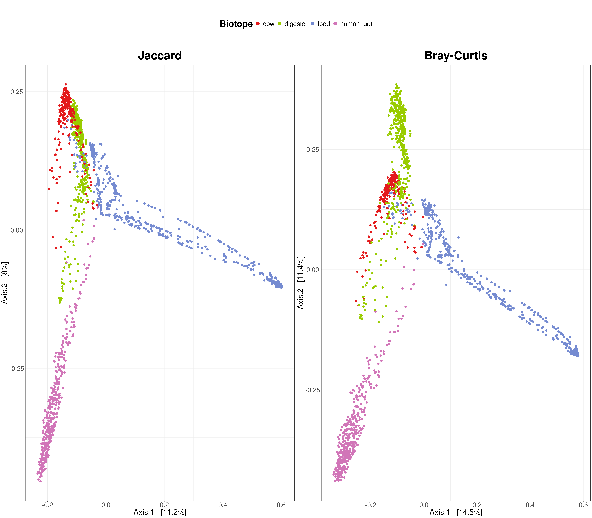
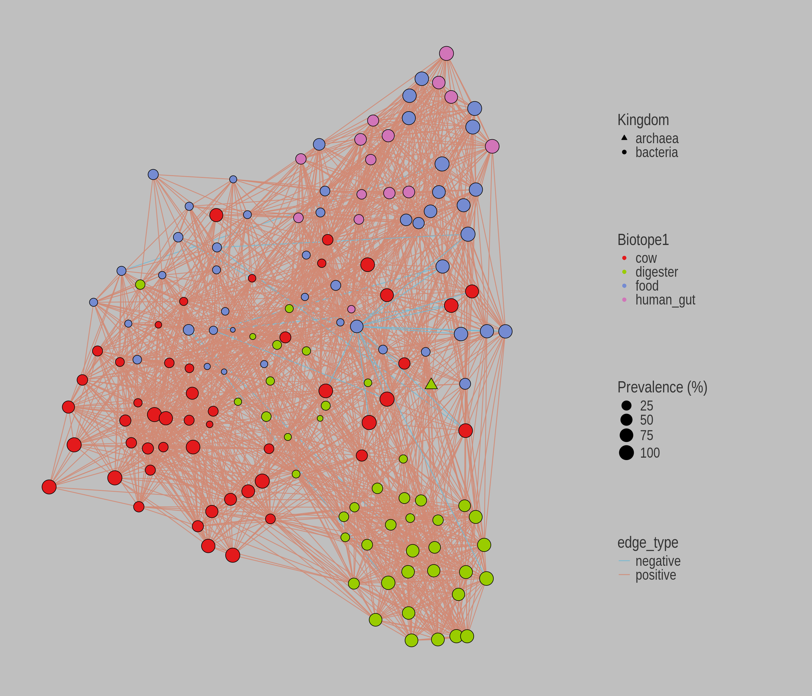
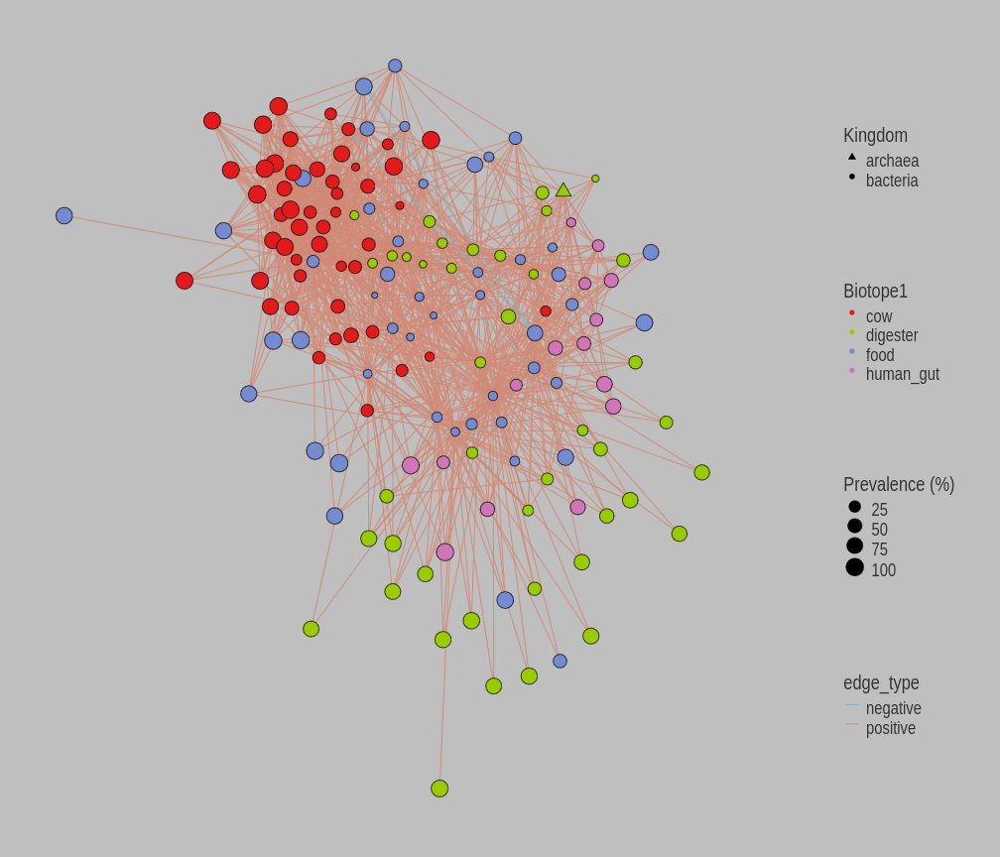

| Year of Submission | 2022 |
| Teams Involved | Bibliome Migale StatInfOmics |
| Coordinators | Stéphane Chaillou, Marie Champomier Vergès, Hélène Chiapello, Marion Leclerc, François Marras |
| Participants from MaIAGE | Hélène Chiapello, Robert Bossy, Mouhamadou Ba, Olivier Rué, Cédric Midoux |
| Partners (outside MaIAGE) | CATI BOOM |
| Supervisors during my work | Christelle Hennequet-Antier, Cédric Midoux, Hélène Chiapello, Éric Dugat-Bony, Julien Tap |
Open16S | MaIAGE - INRAE


Context of my contribution
My contribution to this project took place in two phases over the course of 2024. From April to September, I worked on it as part of my final-year internship. Then, from October to December, I continued working on the same project—starting from the beginning again—to obtain more robust results for potential publication.
Unfortunately, as my contract ended before the writing phase of the paper began, I had to leave some aspects of the work partially unfinished.
However, the details of my accomplishments can be found in two Quarto blogs:
Internship Open16s project (completed during my internship)
Blog Open16s Project (completed during my three-month contract)
Of course, the second blog reboot all my previous work so if you want to check only one, feel free to go with Blog Open16s Project
Open16S project
INRAE has been a pioneer in open science and established a dedicated department for this domain in 2020.
The Open16S project, led by the MICA department at INRAE, is an innovative proof-of-concept (POC) initiative developed as part of the department’s policy. Its goal is to address challenges related to the reuse of public data in metagenomics, particularly to generate new, testable biological hypotheses through the integration of datasets.
The primary objective of the project is to take a cross-disciplinary approach to microbial ecosystems associated with the human food chain by utilizing 16S metagenomic datasets from various biotopes.
This project involves 12 research units from the MICA department, covering a complete range of targeted ecosystems, including food, digesters, human gut samples, and animal samples (specifically cow teat microbiomes).
At the time of my arrival, the project’s roadmap included several key steps:
- Exploring cross-cutting questions in microbial ecology using two statistical approaches:
- A hypothesis-driven approach (hypothesis-guided analysis)
- A data-driven approach (data-guided analysis)
- A hypothesis-driven approach (hypothesis-guided analysis)
- Integrating and thoroughly analyzing datasets to understand and formulate new hypotheses about the determinants of microbial community structuring.
My work primarily focused on conducting exploratory and integrative statistical analyses on 16S metagenomic data. Additionally, I worked on inferring association networks between microbial species.
Exemple of visual results




Acknowledgments
I would like to express my gratitude to the collaborators on this project Christelle Hennequet-Antier, Cédric Midoux, Hélène Chiapello, Éric Dugat-Bony, and Julien Tap for their guidance and expertise.
I would also like to express my gratitude to everyone in the MaIAGE unit for their warm welcome and kindness. Their team spirit and friendliness greatly contributed to making this work a unique and enriching professional experience.